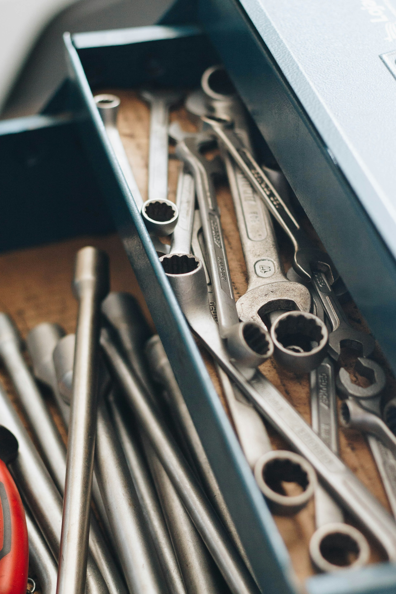

Two ways to work as an auto repair technician.
There are two main ways to work as an auto repair technician. One option is to own your own auto repair business, which allows you to be your own boss and make business decisions. Business owners are responsible for managing customers, employees, finances, and daily operations. Another option is to work for someone else, such as an auto repair shop, dealership, or service center. Employees can focus on repairing vehicles without the added responsibilities of running a business. Both career paths can provide rewarding opportunities for skilled auto repair technicians.
What tools are needed to get started?
To get started in auto repair, you will need a basic set of hand tools for common maintenance and repairs. A quality socket and ratchet set is one of the most important tools for working on different parts of a vehicle. Wrench sets, screwdrivers, and pliers are also essential for loosening, tightening, and adjusting components. A hydraulic floor jack and jack stands are needed to safely lift and support a vehicle while working underneath it. Safety equipment such as gloves, safety glasses, and steel-toe boots helps protect you from injuries. A diagnostic scan tool can help identify problems with a vehicle's computer system. You should also keep a good flashlight or work light to improve visibility in dark areas of the vehicle. As your skills grow, you can gradually add more specialized tools to handle advanced repairs and diagnostics.

Tips to help you succeed
- Always prioritize safety when working on vehicles.
- Stay updated with the latest automotive technologies and repair techniques.
- Build strong relationships with customers and colleagues.
- Invest in continuous learning and professional development.
- Building a Successful Career in Automotive Repair
- How to Start a Sole Proprietorship